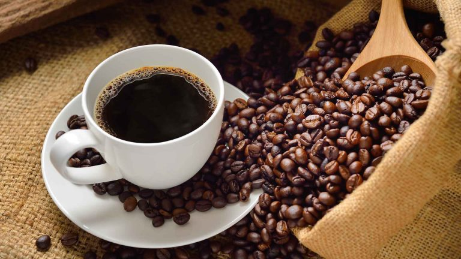

The Coffee House Story
SIGNATURE by The Coffee House là mô hình khác biệt hoàn toàn với các cửa hàng cà phê khác trong chuỗi với định vị cao cấp và riêng biệt hơn. Nếu mỗi quán The Coffee House đã là ‘Nhà’, thì SIGNATURE by The Coffee House là ngôi nhà có nhiều yếu tố độc đáo để trở thành người ‘Bạn cà phê’ đặc biệt của bạn. Người bạn ấy sẽ cùng bạn thưởng thức một bữa cà phê đặc sản Signature hợp gu, kể câu chuyện về hành trình của hạt cà phê từ khi còn là hạt nhân xanh đến khi trở thành ly cà phê trên tay bạn, kết nối mọi người đến gần hơn tới thế giới cà phê dù khách hàng là người ‘mới’ hay là người đã sành sỏi. Tiếp tục, các hạt cà phê đã rang chín được đưa đến quầy bar, dẫn vào các ống silo nhỏ hơn để nghỉ, chờ phục vụ. Tại quầy bar, có một máy rang mẻ nhỏ liên tục rang và cho ra lò các mẻ cà phê mới, đượm hương cà phê khắp không gian quán. Tiếp tục, các hạt cà phê đã rang chín được đưa đến quầy bar, dẫn vào các ống silo nhỏ hơn để nghỉ, chờ phục vụ. Tại quầy bar, có một máy rang mẻ nhỏ liên tục rang và cho ra lò các mẻ cà phê mới, đượm hương cà phê khắp không gian quán.
Trong đó, chất lượng hương vị cà phê được bảo đảm nhờ quy trình rang tại chỗ,chia làm các mẻ nhỏ để cà phê giữ trọn vẹn hương vị nguyên bản. Ai đến quán cũng có thể tìm được hương vị phù hợp từ 4 lựa chọn cà phê đặc sản Signature: Campfire Blend (Lửa trại) mẻ rang là sự kết hợp tầng hương khói và vị đậm ngọt ngào của caramel cháy, sô cô la đen và marshmallow nướng, Tropical Garden Blend (Vườn Nhiệt Đới) đặc tả hương vị trái cây nhiệt đới, Nut Cracker Blend (Kẹp Hạt rang) với hương sôcôla sữa, vị ngọt của đường thô và hạt mắc ca nướng mang lại sự kết hợp ngọt ngào đan xen; Cà phê Phin Blend đậm hương vị của hạt cà phê robusta chất lượng cao được trồng tại Đắk Lắk, Việt Nam. Với mỗi lựa chọn, các barista sẽ có những cách pha chế khác nhau như pha máy, pha phin hoặc ủ lạnh (coldbrew), kết hợp với các nguyên liệu cao cấp để tạo ra nhiều thức uống cà phê đa dạng… Ngoài cà phê đặc sản Signature, khách hàng vẫn có nhiều lựa chọn với những thức uống khác đã làm nên tên tuổi của The Coffee House như Cà phê CloudFee, Trà Hi-Tea Healthy (Trà Hibiscus), Trà sữa CloudTea, Trà Trái cây…
Đặc biệt, các món ăn được nâng cấp để đi cùng (food pairing) với các món uống từ trà hoặc cà phê đầy sáng tạo như ướp bằng gia vị chiết xuất cà phê, xông khói thực phẩm với lá trà, thậm chí tận dụng trà Hibiscus làm nước sốt… để tạo ra những biến tấu thú vị, mang đến cho người thưởng thức những trải nghiệm mới. Phần lớn không gian quán được thiết kế như một sân khấu để trình diễn hành trình hạt cà phê từ khi là nhân xanh cho đến khi được rang chín và pha ra cốc phục vụ thực khách. Hạt cà phê nhân xanh được bảo quản trong các ống silo lớn, tiếp tục hành trình quanh quán qua hệ thống ống đồng mô phỏng bộ ống dẫn cà phê ở một nhà rang. Tiếp tục, các hạt cà phê đã rang chín được đưa đến quầy bar, dẫn vào các ống silo nhỏ hơn để nghỉ, chờ phục vụ. Tại quầy bar, có một máy rang mẻ nhỏ liên tục rang và cho ra lò các mẻ cà phê mới, đượm hương cà phê khắp không gian quán. Tiếp tục, các hạt cà phê đã rang chín được đưa đến quầy bar, dẫn vào các ống silo nhỏ hơn để nghỉ, chờ phục vụ. Tại quầy bar, có một máy rang mẻ nhỏ liên tục rang và cho ra lò các mẻ cà phê mới, đượm hương cà phê khắp không gian quán.

SIGNATURE by The Coffee House đánh thức nguồn cảm hứng qua 4 giác quan: ngửi hương cà phê từ cửa - ngắm chuyện cà phê ở mỗi ngóc ngách - nghe những hạt cà phê reo trong hệ thống ống đồng, điểm xuyết trên nền nhạc chill, nghe chuyện của hạt cà phê qua lời chia sẻ của barista tại quầy bar - nếm thử vị cà phê đặc sản Signature. Xem và nghe bản "hòa tấu" của những hạt cà phê trên nền nhạc trống jazz mỗi khi bắt đầu mẻ rang mới, khách hàng sẽ “giải mã” được trọn vẹn hành trình thú vị của hạt cà phê.Bên cạnh đó, SIGNATURE by The Coffee House vẫn giữ được sự độc đáo trong thiết kế không gian, phù hợp cho việc hẹn hò gặp mặt. Bàn, ghế khu vực bên ngoài được thương hiệu thử nghiệm làm từ các nguyên liệu tái chế. Thiên đường cho những người có tâm hồn bay bổng khi có sự kết hợp hài hòa giữa café và triển lãm mang đậm tính chất nghệ thuật. Quán là một nơi lý tưởng cho những buổi làm việc, học tập và những hẹn hò vào cuối tuần. Tiếp tục, các hạt cà phê đã rang chín được đưa đến quầy bar, dẫn vào các ống silo nhỏ hơn để nghỉ, chờ phục vụ. Tại quầy bar, có một máy rang mẻ nhỏ liên tục rang và cho ra lò các mẻ cà phê mới, đượm hương cà phê khắp không gian quán.